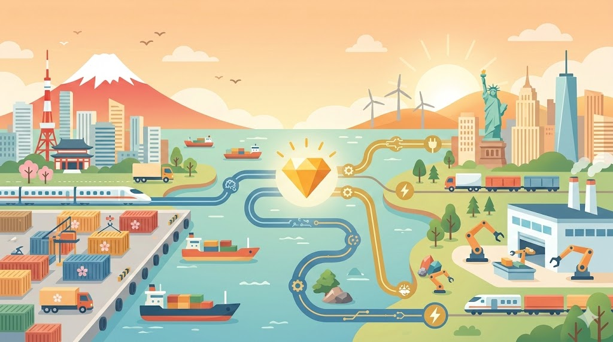

I have no doubt that it is a part of the destiny of the human race, in its gradual improvement, to leave off eating animals,
as surely as the savage tribes have left off eating each other.

余談ながら、筆者はこの令和八年三月の静寂なデスクの前で、世界の「供給網（サプライチェーン）」という名の血管が、音を立てて再編される瞬間を目撃している。日米両政府が発表した総額5500億ドル（約85兆円）に及ぶ対米投融資。日本から米国への年間投資額の7割に相当するこの巨額資金は、単なる関税回避の「通行料」なのか、それとも次世代の覇権を握るための「戦略的出資」なのか。
素材テキストが示す、ガス火力発電、原油輸出施設、そして人工ダイヤモンド製造設備。これら第1弾の3事業（計360億ドル規模）は、2026年の我々が直面する、地政学とテクノロジーが複雑に絡み合った縮図そのものである。
一、構造的矛盾：『9割の利益』を譲る日本の真意
今回の合意において、最も議論を呼ぶのはその収益分配の仕組みだ。日本側が投資を回収するまでは折半、その後は「米側が9割を得る」という極めて不均衡な条件。一見すれば、インフラ整備の財布として利用されているようにも映る。しかし、2026年の産業構造を俯瞰すれば、別の景色が見えてくる。
「日本企業が優先的に採用された場合、輸出額を最大5千億円程度押し上げる可能性がある」
第一生命経済研究所の試算が示すこの数字は、完成後の利益分配という「果実」以上に、建設プロセスにおける「根」の掌握が重要であることを示唆している。特にガス火力発電において、日本が誇る高効率タービン技術がデファクトスタンダードとして米国内に根付く意味は大きい。これは、目先の配当ではなく、今後数十年の「技術的依存関係」を構築するための先行投資なのだ。
💡 ファクトチェック：なぜ『人工ダイヤモンド』なのか？
- 対中依存からの脱却：半導体の放熱基板や高精度切削工具に不可欠な人工ダイヤは、これまで中国が世界のシェアを独占してきた。この供給網を米国側に移転させることは、経済安全保障上の最優先課題である。
- 地域経済の連動：福岡県の金属加工会社など、日本の地方企業の参画が公表されている点は特筆に値する。グローバルな巨額投資が、日本のローカルな技術力を米国へ繋ぐ「橋渡し」となっている。
二、不透明な関税政策と「高市訪米」の重圧
トランプ政権との交渉は、常に「一筋縄ではいかない」難解なパズルだ。相互関税が違法と判断された後もなお、日本政府がこの巨額投融資を継続するのは、対米関係を「予測可能なもの」に固定したいという強い意志の現れだろう。今月の高市早苗首相の訪米に合わせた発表は、まさに政治的な結実を急いだ形だが、その代償は国民の負担というリスクとなって跳ね返る可能性も孕んでいる。
2026年の我々は、AIを用いた精密な需要予測によって、無謀な投資を回避する知恵を持っている。しかし、最後に決断を下すのは、アルゴリズムではなく政治の意志だ。政府系金融機関による融資保証が「国民の負担」へと転じるか、「未来の富」へと化けるかは、今後の運用における透明性に懸かっている。
🔗 関連リソース
- 最新の通商白書と経済安全保障の展望：経済産業省 公式サイト
- 日米投資協力の具体的枠組み：外務省 米国経済情報
巨額の投資が、ただの数字の羅列に終わるのか。それとも、2026年という激動の時代において、日本が再び世界のサプライチェーンの主導権を握る契機となるのか。我々が注視すべきは、目先の政治事情ではなく、その投資の先にある「日本の技術が不可欠な世界」の設計図であるはずだ。
🛒 おすすめ関連商品
![Q&A日本経済のニュースがわかる！ 2026年版 [ 日本経済新聞社 ]](https://thumbnail.image.rakuten.co.jp/@0_mall/book/cabinet/5456/9784296125456_1_29.jpg?_ex=128x128)
¥1,870
![クラフトジン ジン お酒 金賞受賞酒 日本経済新聞 国産ジン プレゼント ギフト ホワイトデー 2026 受賞 人気 ボタニカル カクテル トニック ドライジン 和製ジン 槙 KOZUE 中野BC 長久庵[016991] 富士白蒸留所](https://thumbnail.image.rakuten.co.jp/@0_mall/chokyuan/cabinet/kozue/1st_kozue_20190215.jpg?_ex=128x128)
¥2,970
![中学受験を考えたらまず読む本 2026年版 （日経ムック） [ 日本経済新聞出版 ]](https://thumbnail.image.rakuten.co.jp/@0_mall/book/cabinet/3841/9784296123841_1_24.jpg?_ex=128x128)
¥1,760
📚 参考・関連記事
- 経済安全保障推進法の概要 - 内閣府 — 記事の核となる「経済安全保障」の法的枠組みと、特定重要物資（半導体、蓄電池等）の選定基準を理解するための一次情報源です。
- 日米貿易協力と投資の現状 - 外務省 — 記事で触れられた5500億ドル規模の対米投資の背景にある、二国間の通商政策や最新の外交合意を確認するために最適です。
- 人工ダイヤモンドの産業利用と市場動向 - Wikipedia — 第1弾事業の重要物資である「人工ダイヤモンド」が、なぜ半導体やハイテク産業の供給網において戦略的価値を持つのか、技術的背景を補完します。